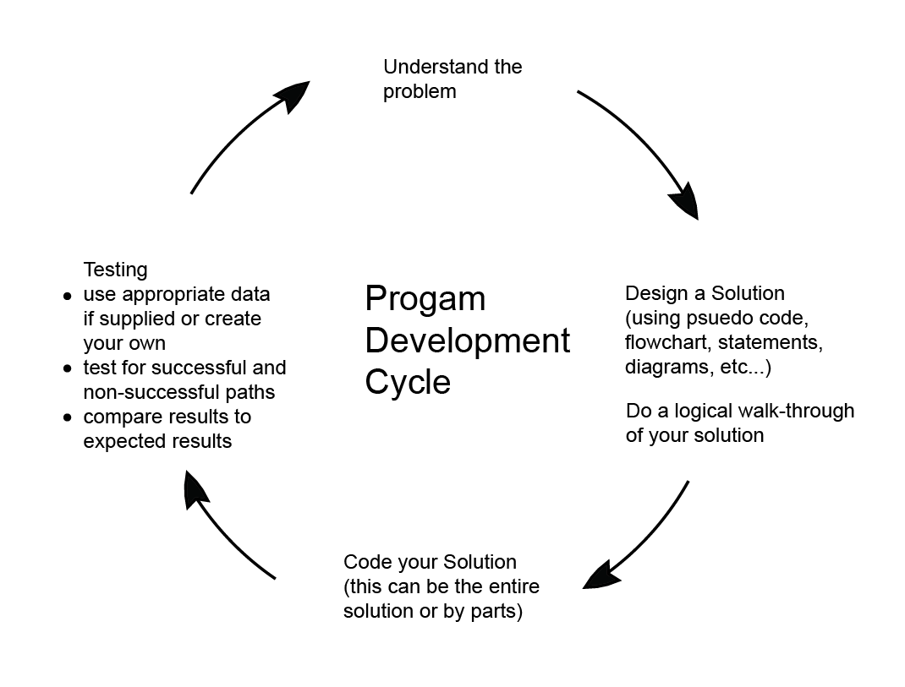
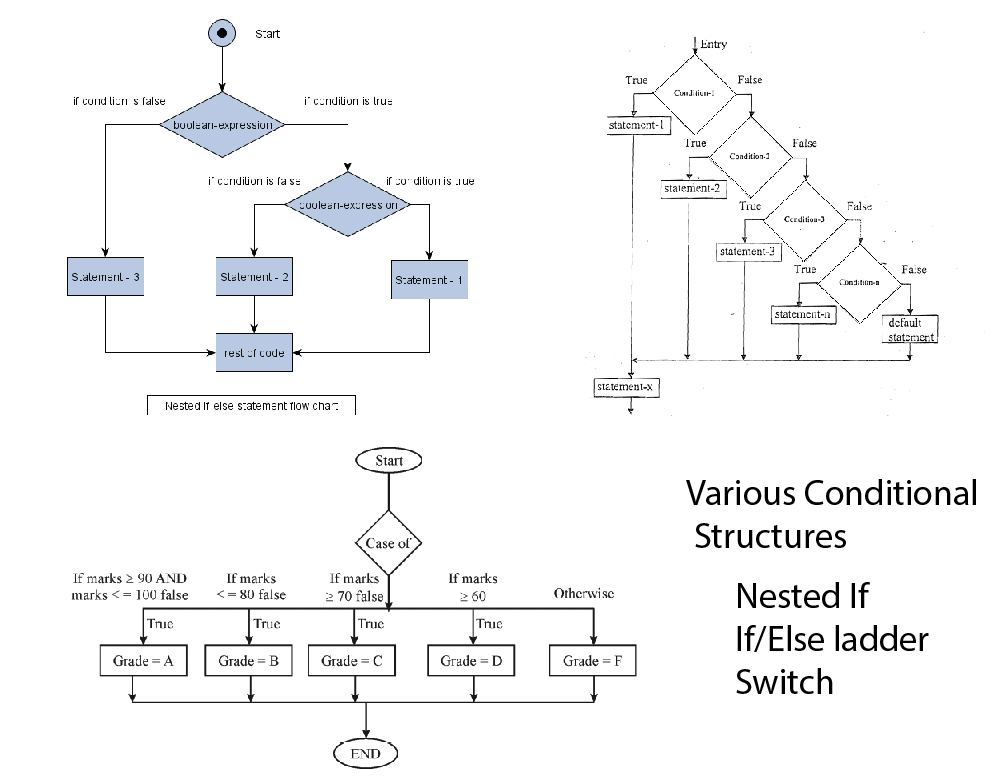
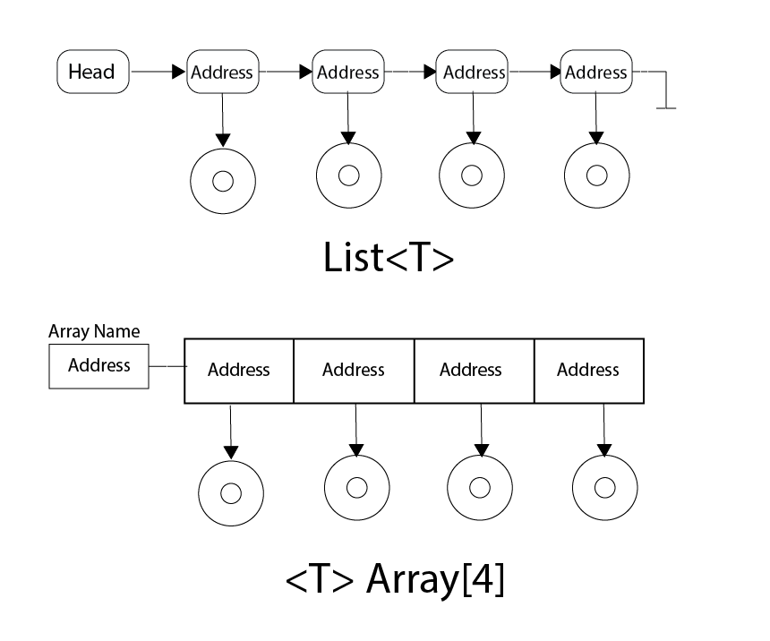

Lesson Plan: Day 3
Objectives:
Discuss:
- Review various datatypes/structures: List, array, looping, switch, if/else?
- Datatypes in memory storage. What is passed during method calls.
- Review Programming Development Cycle. Create pseudo code logic for Main() driver.
Code:
- Finish class: Die
- Give definition of Turn class and have students code it then review
- Code console driver Main() (declaring various datatypes, Menu/Switch/Loop)
Resources: Student
- Moodle site.
- Object Review topic:
- Url Programming Fundamentals: An Object-First Approach in C#
- pdf: OOP Basics
- pdf: The ABCs of Classes and Objects
Resources: Instructor
- Lesson 2: OOPs Basic Review: Die Main() driver
Concepts:
- Program Development Cycle
- Logic Design (planning)
- Code Implementation
- General C# syntax review
- List vs Array
- For loops, Do While vs Do Until



Coding:
- Create a class: Die (complete see lesson Day 2)
- Create a class: Turn
- Create Main driver: Menu, Do while loop, Switch with stub case (writeline message)
public class Turns
{
public int Player1 { get; set; }
public int Player2 { get; set; }
public string Winner { get; set; }
//no constructor
//no behaviours
}
static void Main(string[] args)
{
//the object definition for the data objects need
//to be placed in this file.
//the namespace for my data objects is OOPsData
//since this namespace does not match the namespace
//for the Main(), you must include the OOPsData
//namespace in this file so that Main() knows where
//to find Turn
//generate an instance of List<T> where T represents
//the datatype of the item I am collecting
//new causes the contructor of List<T> to executed
//this instance's variable will be set to a List
//at this time the List instance is empty
//.Net Core does not bring in the default using that
//.Net Framework brngs in. Therefore you will need to
//resolve the references
List<Turns> gameTurns = new List<Turns>();
//declare an array of datatype Die which will hold 2
//elements
//this array is empty
Die[] dice = new Die[2];
//load the array elements
dice[0] = new Die(); //default constructor
dice[1] = new Die(6, 3, "Green"); //greedy constructor
string menuChoice = "";
do
{
Console.WriteLine("Game Menu: \n");
Console.WriteLine("A) Set Die side count");
Console.WriteLine("B) Roll the dice");
Console.WriteLine("C) Display all game turn results");
Console.WriteLine("X) Exit");
Console.Write("Enter menu choice: ");
menuChoice = Console.ReadLine();
switch(menuChoice.ToUpper())
{
case "A":
{
Console.WriteLine("Case A");;
break;
}
case "B":
{
Console.WriteLine("Case B");;
break; }
case "C":
{
Console.WriteLine("Case C");;
break; }
case "X":
{
Console.WriteLine("Thank you for playing. Come again.");
break;
}
default:
{
Console.WriteLine("Invalid menu choice. Try again.");
break;
}
}
} while (menuChoice.ToUpper() != "X");
Console.ReadKey();
}//eom